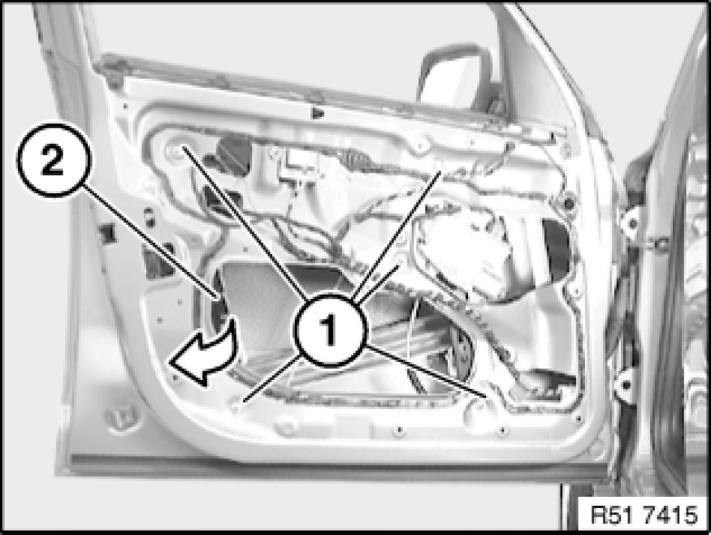
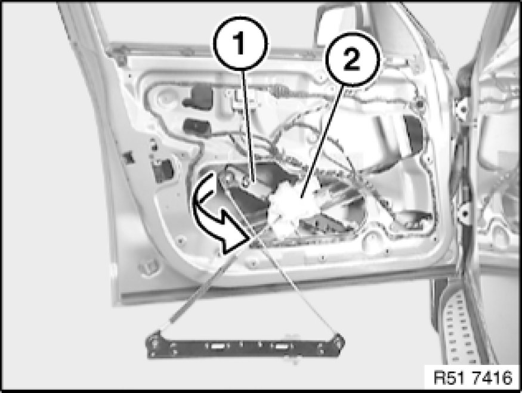

51 33 000 - Removing and installing (replacing) power window unit in left or right front door
51 33 000 - Removing and installing (replacing) power window unit in left or right front door

Note:
When removing door lock, snap door window glass out only, do not remove, secure in door window frame.
Necessary preliminary tasks:
- Remove front door window glass Service and Repair

Unscrew nuts (1).
Feed out rear section of power window unit (2) in direction of arrow.
Installation:
Tightening torque 51 33 2AZ 51 32 Front Door Windows.
Note:
The work step "Removing and installing/replace door lock" ends here.

Feed out front section of power window unit (1) with flat motor (2) in direction of arrow from front door.
Replacement:
Remove flat motor for power window unit 67 62 000 - Removing and installing / replacing flat motor for front left or right power window unit.